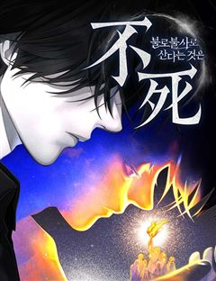
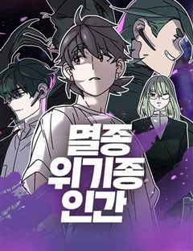
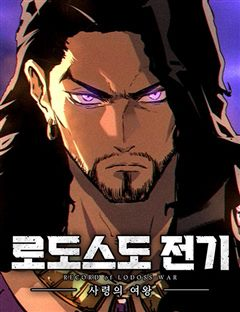
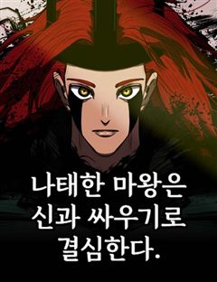
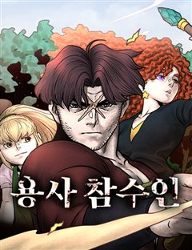
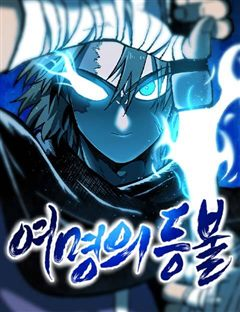

쿠베라 같은 웹툰 추천

쿠베라 · 카레곰
쿠베라 재밌게 봤다면 이 웹툰들도 좋아할 거예요. 같은 장르이면서 절망적인, 신화, 다크판타지 같은 요소가 겹치는 작품을, 겹치는 요소가 많은 순서로 20개 골랐어요.
2026-09-29 기준 · 네이버웹툰·카카오웹툰·레진코믹스 · 성인 작품 제외
내 취향으로 직접 골라 추천받기 →-
1
 네이버웹툰
네이버웹툰나이트런
우주력 430년. 성간이동이 가능해져 별과 별을 이동하는 시대 인간은 괴수와 싸우고 있다. 기사와 함께.광활한 우주를 배경으로 판타지 SF가 다가온다.
절망적인다크판타지크리처세계관판타지네이버웹툰에서 보기 → -
2
 네이버웹툰
네이버웹툰공포 쯔꾸르 생존기
전설의 공포게임 [비현실]을 실행한 순간 게임 속에 갇힌 이현. 한밤중의 학교에서 눈을 뜬 그는 의문의 여고생 다연과 만난다. 이곳에서 살아남는 방법은 단 하나, 섬뜩한 퍼즐을 풀고 숨겨진 규칙을 찾아낼 것. 과연 두 사람은 죽음의 게임을 끝내고 현…
절망적인다크판타지크리처세계관판타지네이버웹툰에서 보기 → -
3

네이버웹툰불로불사로 산다는 것은
공교회의 사제 로베르타는 북쪽 끝에 있는 벽지, 디트마르셴의 주임 사제로 발령받는다. 전임자가 실종된 사건이 벌어진 직후 주어진 자리이기에, 로베르타는 경계를 품고 디트마르셴 공작 ‘울리히’에 관해 알아간다. 소문에 의하면 그는 300년 이상 영주로…
신화마법세계관인외존재판타지네이버웹툰에서 보기 → -
4
 네이버웹툰
네이버웹툰보이드맨
신들이 지배하는 포스트 아포칼립스. 가족을 앗아간 신을 죽이기 위해, 난 죽음으로 들어갔다. “공허여, 내게 힘을 빌려줘. 신을 죽일 수 있는 힘을...!”
신화세계관인외존재복수극판타지네이버웹툰에서 보기 → -
5
 네이버웹툰
네이버웹툰66666년 만에 환생한 흑마법사
강대했던 흑마법사 디아블로 볼피르. 12신의 계략에 당해 억겁 속에 봉인되었지만, 그로부터 66666년이 흘러 다시금 이 땅에 강림한다! "응애!" 웰턴 백작의 갓 태어난 장남으로. 딥다크 매직 판타지 시작!
신화다크판타지마법판타지네이버웹툰에서 보기 → · 66666년 만에 환생한 흑마법사 같은 웹툰 → -
6
 네이버웹툰
네이버웹툰용사보다 너무 강해서 힘을 숨김
어릴 적부터 만화 속에 나오는 주인공보다 평소에는 가벼워 보이지만 사실 누구보다 강한 '힘을 숨긴 캐릭터'가 멋있었다 그리고 찾아온 전생의 기회! "새로운 세상에서 무엇이 되고 싶나요?" "힘숨찐이 되고 싶어!" ...내가 바란 힘숨찐은 이런 게 아…
신화마법크리처인외존재판타지네이버웹툰에서 보기 → -
7

네이버웹툰멸종위기종인간
거대한 혜성이 지구를 덮친 날, 모든 인간들의 소원이 이뤄지고 말았다. 오히려 재앙이 되어버린 이 세상에서 소원으로 능력을 얻은 이들은 인류의 멸종을 맞선 영웅이 되기로 선택한다.
절망적인크리처인외존재판타지네이버웹툰에서 보기 → -
8

네이버웹툰로도스도 전기 : 사령의 여왕
카스툴의 피를 이은 사령술사 넥트렐라. 그의 손에 붙잡힌 연인을 되찾기 위해, 광전사 테인은 목숨을 건 싸움에 뛰어든다.
다크판타지마법세계관판타지네이버웹툰에서 보기 → -
9

네이버웹툰나태한 마왕은 신과 싸우기로 결심한다.
갑작스레 인간들의 성 '소돔'에 강림한 신들. 소돔 반대편에 있는 마왕을 데려오라는 말에 함께 인간들을 학살하기 시작한다. 지옥도가 펼쳐진 상황에서 몰래 성을 뛰쳐나온 한 명의 기사는 마왕을 데리러 가게 된다. 2024년 4월 독자 PICK 선정작!
다크판타지마법세계관인외존재판타지네이버웹툰에서 보기 → -
10
 네이버웹툰
네이버웹툰작두
미신따윈 믿지않는 주인공 '권용진'. 그의 만 16세의 생일이 지나자 눈 앞에 펼쳐진 믿을 수 없는 일들.
신화세계관인외존재판타지네이버웹툰에서 보기 → · 작두 같은 웹툰 → -
11
 네이버웹툰
네이버웹툰카루나
돈과 과학이 교리인 집단 ‘뱅크’. 그들의 시설에서 자란 라만은 평생 잡역부로 살다 죽을 운명이었다. 그러던 어느 날, 악마와 얽힌 사건 속에서 뱅크가 철저히 부정해 온 ‘신의 힘’ 아스트라를 각성한다. 하루아침에 운명이 뒤집힌 라만은 악마를 사냥하…
신화마법인외존재판타지네이버웹툰에서 보기 → -
12
 네이버웹툰
네이버웹툰아카데미의 천재칼잡이
후회로 점철된 채 끝나버린 삶. 우연히 찾아온 두 번째 기회. 세상을 구하기 위한 로난의 모험이 시작된다.
마법크리처인외존재판타지네이버웹툰에서 보기 → -
13
 네이버웹툰
네이버웹툰새끼부터 시작하는 악마생활
소설 [인마록] 속, 천사와 악마의 끊임없는 전쟁터인 세계. 세상의 균형이 위태롭게 흔들리는 시대, 인간이 낳은 반인반마로 환생한 요한은 튀어나오는 악마의 본능을 때로는 억누르며, 때로는 이용하며. 소설 속 인물들을 이용해 악인을 처단해야 한다. 악…
다크판타지마법인외존재판타지네이버웹툰에서 보기 → -
14
 네이버웹툰
네이버웹툰미드우트
괴물 처치 부대 '스레투'가 사라진 지금... 인간들은 괴물들의 먹이가 되었다. 이유는 '이안'이라는 오퍼 지원자가 모든 군인들을 죽여버렸기 때문이다. 태어날 때부터 생명의 위협을 받으며 살아온 '진청도'는 전설의 아이템 '미드우트'를 이용해 과거로…
마법크리처복수극판타지네이버웹툰에서 보기 → -
15

네이버웹툰용사참수인
사형집행인으로 용사를 참수하고 은퇴하여 자유인이 된 데닐 패트릭은 한적한 산골에서 무료한 나날을 보낸다. 그러던 어느 날 난데없이 딸이라고 찾아온 아이의 등장에 데닐 패트릭의 인생은 산골을 벗어나 전 대륙을 향하게 되는데...
마법세계관인외존재판타지네이버웹툰에서 보기 → -
16

네이버웹툰여명의 등불
‘태양의 제국’ 소속 전쟁 영웅 ‘버키’ 병장. 그는 황제를 향한 우직한 충심과 뛰어난 무예로 제국 병사들의 귀감이 되고 있지만, 사실 그의 최종 목표는 제국을 몰락시켜 황제에게 복수하는 것이다. 버키는 거대한 제국을 상대로 복수를 완수할 수 있을까?
다크판타지세계관복수극판타지네이버웹툰에서 보기 → -
17
 네이버웹툰
네이버웹툰서울밤피어
시체 구덩이에서 눈을 뜨는 재이. 운명적으로 만난 반과 피의 계약을 맺고 밤피어의 신부가 된다. 재이는 잃어버린 기억 속 자신의 연인을 찾아 지켜내기 위해 반은 원수 제이콥을 찾기 위해 다른 목적의 두 사람이 운명의 한배를 타고 서울로 향한다.
다크판타지인외존재복수극판타지네이버웹툰에서 보기 → -
18
 네이버웹툰
네이버웹툰공작의 첫날밤을 빼앗은 쓰레기 영애
소공작을 유혹하라는 아버지의 계략에 휘말린 시골 백작 영애 엘리오. 손끝 하나 닿지 않았건만 하루아침에 황녀의 정혼자를 덮친 ‘쓰레기 영애’가 되어 버린다. 그런데 정정해 주겠다던 소공작은 오히려 스캔들에 불을 지피고, 폭력적인 아버지에게서 벗어나고…
마법크리처인외존재판타지로맨스네이버웹툰에서 보기 → -
19
 네이버웹툰
네이버웹툰환생좌
신의 심심함을 만족시키기 위해 시작된 이면세계, 그로 인해 멸망 직전 위기에 처한 인류는 마지막 생존자 중 한 명인 '강한수'를 과거로 보내 미래를 바꾸려 한다. "너희가 가장 믿어야 할 것은 자신의 능력이다. 쓸모없으면 반드시 버려지기 마련이지"
신화크리처인외존재판타지네이버웹툰에서 보기 → -
20
 네이버웹툰
네이버웹툰이매망량
사람을 해치는 악귀 이매망량이 본격적으로 활개를 펼치기 시작한 조선, 전 국토 곳곳에 고통과 신음이 끊이질 않는다.
신화크리처인외존재판타지네이버웹툰에서 보기 →